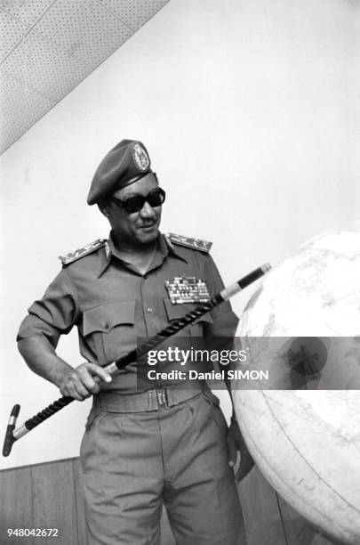
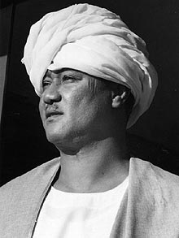
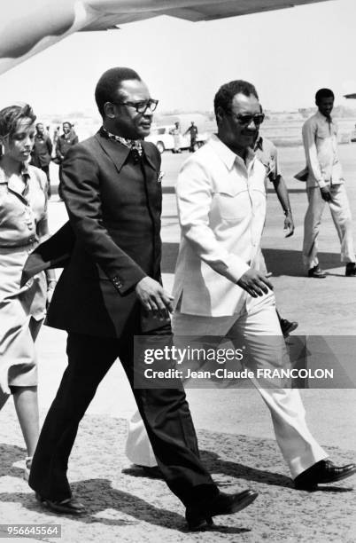
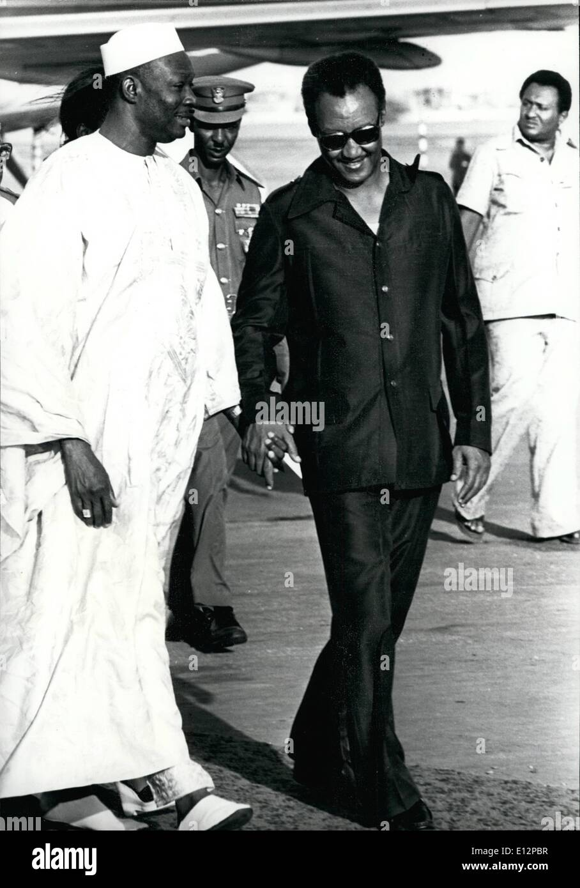

Jaafar Muhammad an-Nimeiri was born on January 1, 1930, in Omdurman, Sudan. A military officer turned politician, he led Sudan from 1969 to 1985 after a successful coup. His leadership was marked by socialism, economic reforms, and the controversial introduction of Sharia law.
Nimeiri's tenure saw significant developments, including the 1972 Addis Ababa Agreement, which ended a 17-year civil war in South Sudan. He also implemented major infrastructure projects and attempted economic modernization.
Despite his early successes, his rule became increasingly authoritarian. His decision to implement Sharia law in 1983 alienated many and reignited civil conflict. Economic decline and popular discontent led to his overthrow in 1985 while he was on a trip to the U.S.



Jaafar Nimeiri's legacy remains controversial. While some credit him with modernizing Sudan, others blame him for deepening conflicts. He returned from exile in 1999 but remained largely out of politics until his death on May 30, 2009.